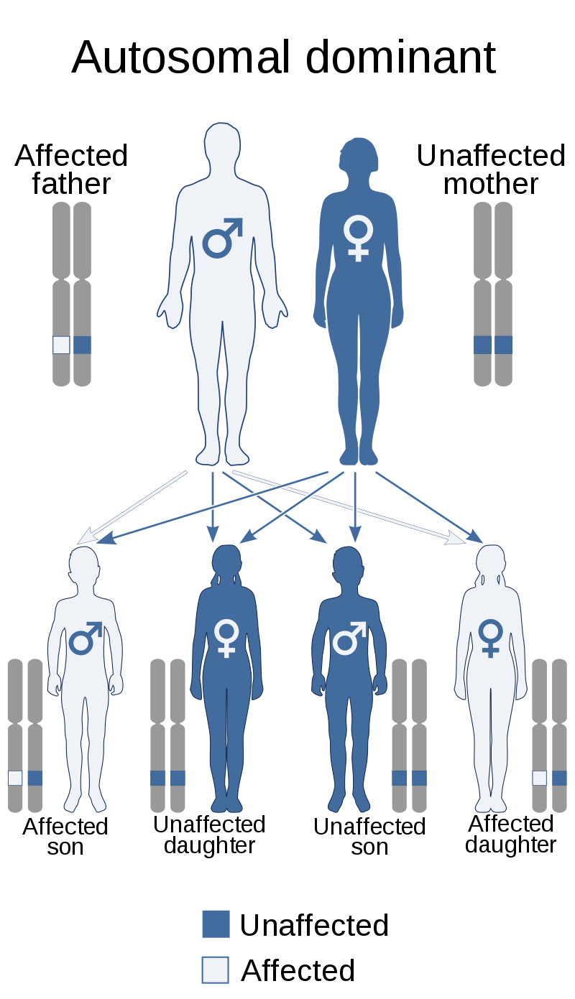

- PLS
- PMA
- PBP
PLS이란 무엇인가?
Primary lateral sclerosis (PLS) is a rare neuromuscular disease characterized by progressive muscle weakness in the voluntary muscles. PLS belongs to a group of disorders known as motor neuron diseases.

Motor neuron diseases develop when the nerve cells that control voluntary muscle movement degenerate and die, causing weakness in the muscles they control.